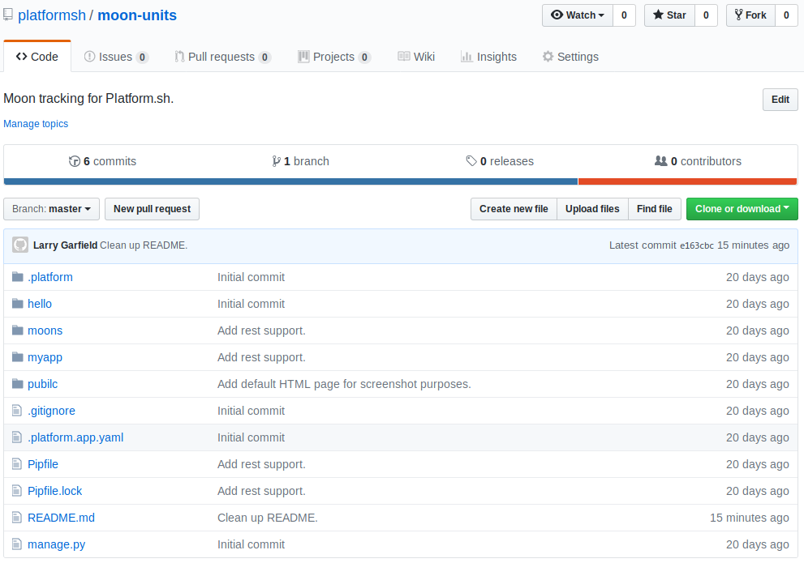
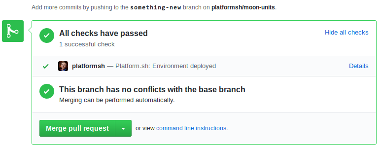
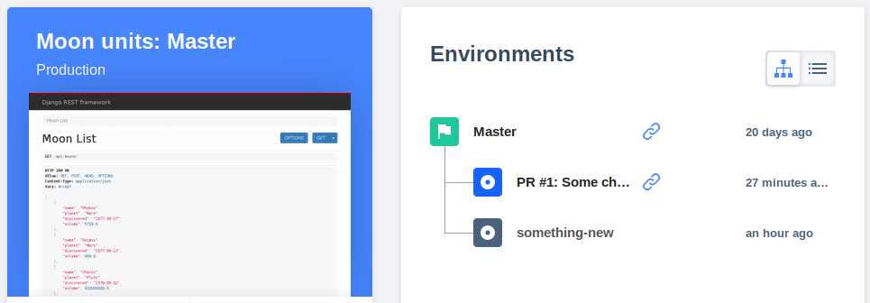

Integrate with GitHub, Bitbucket, or GitLab
I want to use pull requests, but still stage my changes

Clone your project to a public or private repo
You can tie any project into GitHub, Bitbucket, or GitLab
Connect it to Platform.sh with one command
Your Platform.sh project is now a mirror of GitHub

Every Pull request becomes a new environment you can test

When you merge the PR and remove its branch, it gets removed from Platform.sh, too
Problem: I want to have all my code changes automatically deployed to a staging environment
Script
Overlay: Integrations with Git hosts like GitHub mean every branch can have its own staging environment and every code change can be automatically deployed
Show typing into terminal `platform integration:add --type=github --project=my-platform-project --token=abcdef12345 --repository=example/my-web-project`
Overlay: Push a new commit to your branch and it will be automatically deployed.
Show entering command `git commit -a -m “Test new version”`, followed by `git push -u origin my-branch`
Show UI. Zoom in on envs list, showing `my-branch`, and show the “Test new version” commit being built
Shows
Continuous delivery
Build code on git push
Integrate with GitHub/GitLab